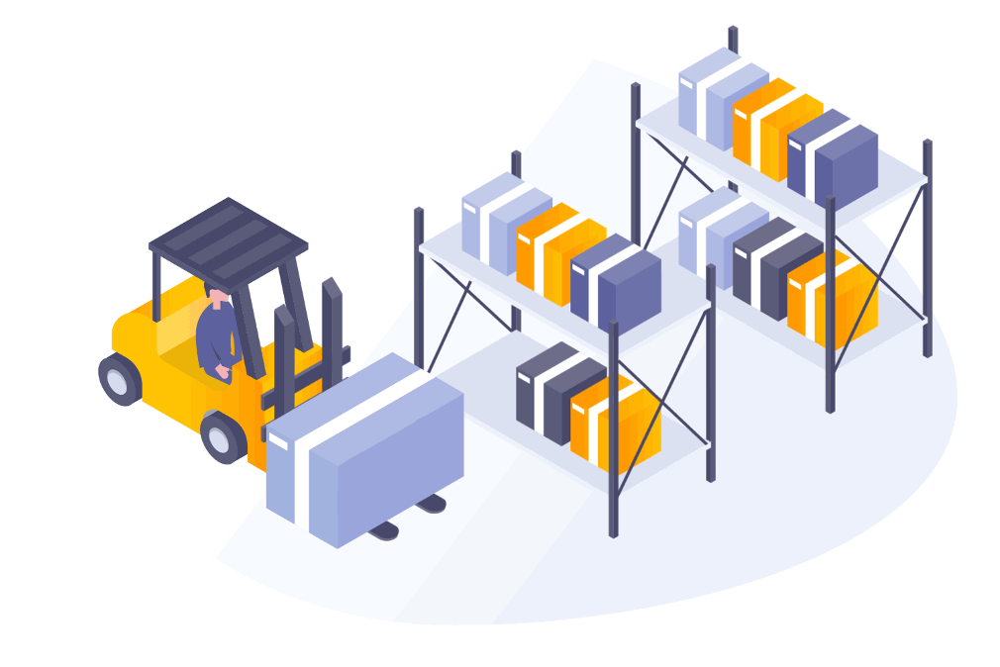

INVESTIGACION Y DESARROLLO DE PROPUESTAS DE MEJORA
Implementación de traspaleo materia prima y eliminación de cartón

El principio central de lean manufacturing es la reducción y eliminación del desperdicio. Permite obtener el producto correcto en el momento correcto, sin excesos de cantidades y aceptando que los cambios y mejoras son necesarios. Para esto se diseñarán 4 líneas de producción eliminando el uso de cartón de la materia prima en piso, que impactarán directamente a los 7 desperdicios de lean manufacturing.


Contacto
Anasophia Gonzalez Elizondo A01382520@tec.mx